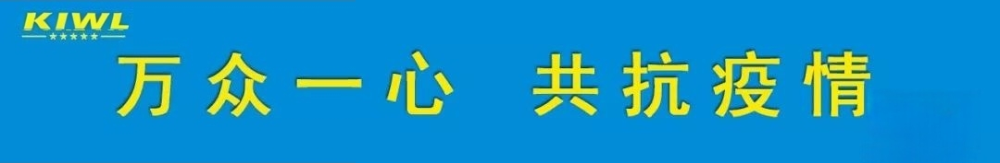

سكرتير لجنة وينتشو تشن ويجون يزورKIWL
متابعة أعمال استئناف الإنتاج

2 20بعد ظهر ذلك اليوم، ذهب أمين لجنة الحزب في مدينة ونتشو تشن ويجون إلى KIWL للإشراف على الوقاية من الوباء واستئناف الإنتاج، و“خدمات ثلاثية”النشاط، رافق رئيس اللجنة السياسية الاستشارية للبلدية تشن زورونغ، والأمين العام للجنة البلدية وانغ جون، ونائب رئيس اللجنة باو شياو أو، وأمين منطقة لونغوان تشن ينغ شو عمل الزيارة. وقدّم رئيس مجلس الإدارة جيانغ وي والمدير العام جيانغ هونغ تقريرًا عن الوضع ذي الصلة..
دخل الأمين تشن ويجون ومرافقوه ورشة التصنيع الذكي، حيث تعمل اثنتا عشرة وحدة تصنيع ذكية وأربعة خطوط إنتاج مرنة بشكل طبيعي. وعندما علم أن الورشة، بفضل رفع مستوى الأتمتة، تحافظ على كفاءة عالية رغم انخفاض نسبة حضور الموظفين، أثنى الأمين تشن بإشادة..
في موقع الدعاية للوقاية داخل المؤسسة، استمع الأمين تشن وي جون بتفصيل إلى KIWL بشأن“الوقاية من الوباء6S管理” تقرير عن النظام، وحضور الموظفين، وضمان المواد وغيرها، وأبدى إقراره بإجراءات الوقاية. وأكّد，الوقاية الصارمة والسيطرة على المخاطر شرط مسبق لاستئناف إنتاج المؤسسة، فإذا لم تُربح معركة الوقاية، لا يمكن الحديث عن المبادرة في التنمية، ويجب التأكد من“كلتا اليدين يجب أن تكونا قويتين، والمعركتان يجب أن تُحرزا النصر”.فيما يتعلق بالصعوبات التي تواجهها المؤسسات حاليًا، ستعمق الحكومة“خدمات ثلاثية”الأنشطة، لتقديم الخدمات حيث تحتاجها المؤسسات بشدة، وإيصال التسهيلات إلى المؤسسات“في الجيب”.
أعرب مسؤولو الشركة عن شكرهم للحكومات على جميع المستويات على اهتمامها ودعمها المستمر لـ KIWL، وأكدوا أنهم سوفالالتزام الصارم بمتطلبات الحكومة، والتشدد في مراقبة سلامة الإنتاج عند استئناف العمل，تنظيم عودة الموظفين إلى العمل بشكل منظم، والانتصار حاسمًا في“المعركتين”，القيام بدور قيادي نموذجي، والمساهمة في تعزيز التنمية الاقتصادية واستقرار الوضع الاجتماعي العام.


واتساب

امسح الرمز
لتابعنا